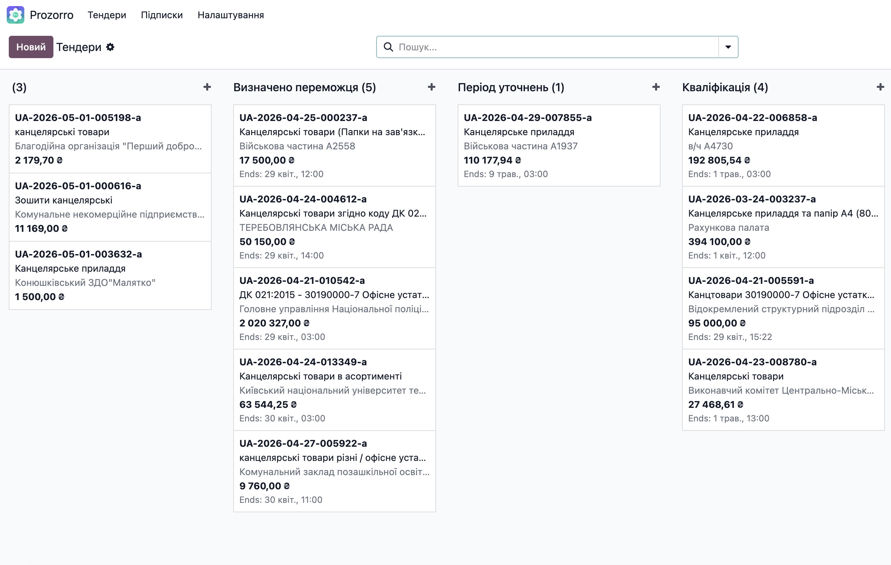
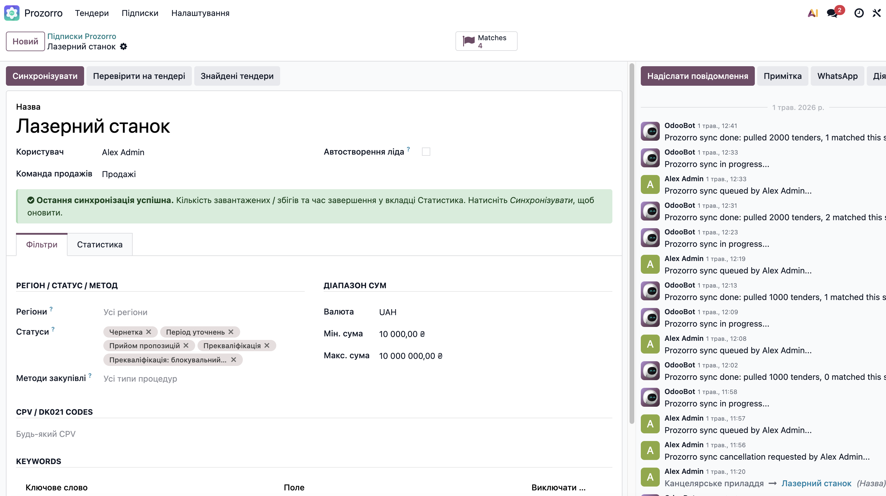
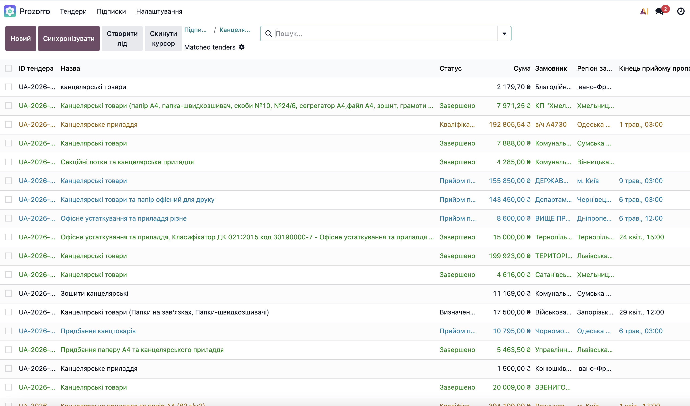
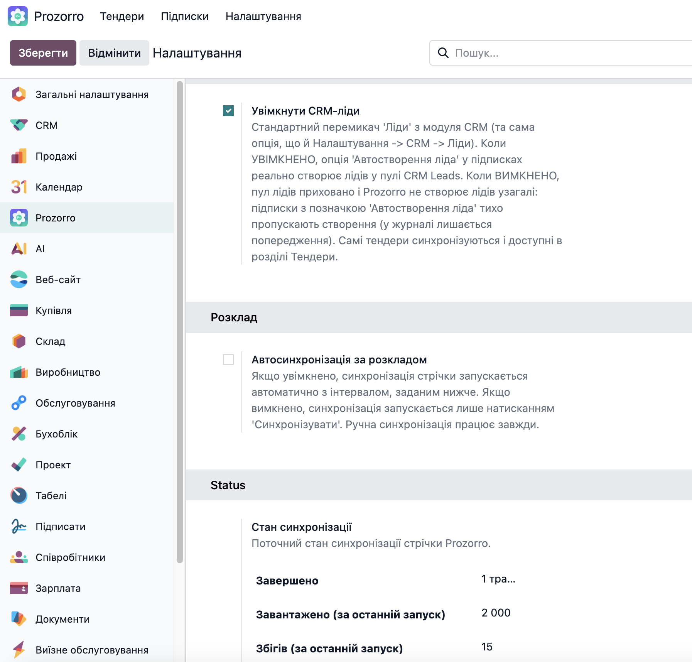

Localized in 8 languages: English · Русский · Українська · Deutsch · Español · Română · Polski · العربية
Ukrainian businesses participating in public procurement read the Prozorro feed manually every morning, copy interesting tender numbers into a spreadsheet, and lose hours every week. Prozorro Connector moves that workflow into Odoo: define your subscription once (CPV codes, keywords, region, value range, status), and the cron pulls the public feed hourly, persists only matches, emails an alert, and optionally creates a CRM lead per match.
Odoo 19 LGPL-3 Free No external dependencies Community & Enterprise
Open the Tenders kanban and see every matched tender from the live Prozorro feed, grouped by lifecycle status - active, awarded, clarification period, qualification, complete. Cards show the tender ID, title, expected value, and the deadline countdown. Drag is intentionally disabled - status is owned by the Prozorro feed, not by your sales team.

Each subscription combines CPV codes (DK021:2015), one or more keywords (contains, regex, or negate), regions (mapped to Ukrainian oblasts and cities of special status), a value range, target statuses (active.tendering, complete, cancelled, etc.), and selected procurement methods. A tender matches only when every active filter on the subscription accepts it.
A built-in form-view warning fires if a subscription has neither CPV codes nor keywords - so a misconfigured subscription that would match the entire feed never goes live by accident.


The cron walks the Prozorro feed page by page (default 20 pages per run, configurable). For each tender, the matcher evaluates every active subscription. Only tenders that match at least one subscription are stored - the rest are dropped immediately, so the database stays small even on a busy feed.
A daily retention cron drops matched tenders 60 days after their
tender_period_end unless they were converted to a CRM
lead. The retention window is configurable from Settings.
One screen controls everything: sync schedule (off by default, configurable to any cron interval), API endpoint, pages per run, retention days, and whether to auto-create CRM leads from matches.
A live status block shows whether a sync is currently running, the timestamp of the last successful run, and the last error message if any. A Manager-only Force stop button appears only if a sync has been "running" for more than 60 minutes - clearing stale flags without an Odoo restart.

Want to know whether your subscription would match a specific tender?
Open the tender on prozorro.gov.ua, copy its UUID, paste
it into the Test wizard. The wizard fetches the live tender from the
API and prints a per-filter verdict: which filters
accepted it, which rejected it, and the final overall match. No more
guessing whether your CPV list was too narrow or your keyword regex
was too strict.
Per-subscription opt-in: enable Auto-create CRM lead
and every match for that subscription becomes a crm.lead
linked back to the source tender. Leads are always created with
type='lead' (never Opportunity) so they go through your
normal manual triage. The lead's chatter shows the originating
subscription and the tender UUID for traceability.
On every successful sync that produces at least one match, the
subscribed users receive a per-tender alert email with a teal NEW
MATCH badge, the tender header (name, value, deadline), the tender
items collapsed inside a <details> block so the
inbox preview stays clean, and a one-click "View in Odoo" button
deep-linking into the tender form.
Field labels, settings help text, search filters, action menus, cron names, and the alert email body are translated to seven additional languages. Translations apply automatically based on each user's Odoo language preference - no extra configuration.
English · Русский · Українська · Deutsch · Español · Română · Polski · العربية
en · ru · uk · de · es · ro · pl · ar
Open Prozorro → Settings after installation, switch on Enable scheduled sync, pick an interval (default off so you can sync manually first), and you are done. The feed is public and unauthenticated - no API key, no token, no account on prozorro.gov.ua required.
base, mail, and crm.base.group_user; settings and force-stop restricted to base.group_system. No public HTTP endpoints exposed by this module.urllib.request only. No requests dependency, no third-party HTTP library required at install time.rteam_prozorro_sales module
Need any of the above? The paid extension rteam_prozorro_sales adds tender-to-quotation auto-conversion, full DK021:2015 dictionary, and a daily HTML digest. Get in touch.
Source code, issues, and feature requests: github.com/RteamAgency/rteam-prozorro
Built and maintained by Rteam, an Odoo Enterprise consulting agency. rteam.agency